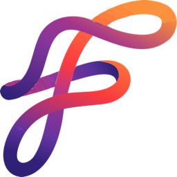

Fabyl for Mac
Streams play natively through VLC, with every audio format.
Loading releases…
Installing
- Open the downloaded
.dmg. - Drag Fabyl into Applications.
- Open it from Applications. It's signed and notarized, so macOS opens it without a warning.
After that, Fabyl updates itself. When it opens it checks for a new version and downloads it in the background; the update installs the next time you quit, so nothing you're watching is interrupted. iPhone, iPad and Apple TV builds are invite-only through TestFlight; ask whoever shared Fabyl with you.